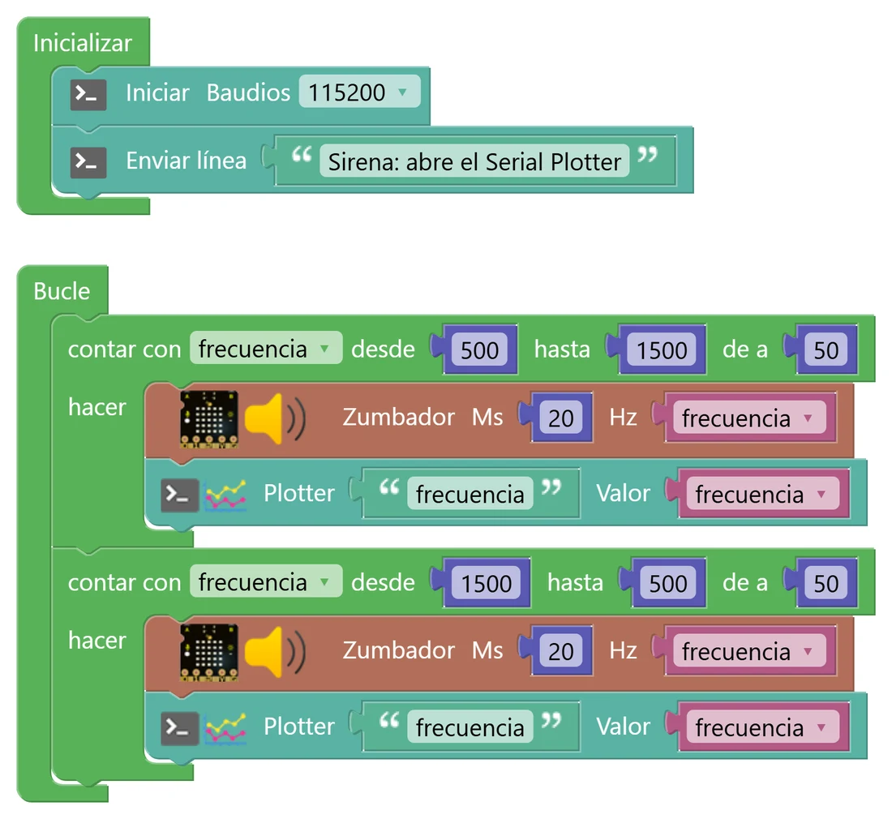
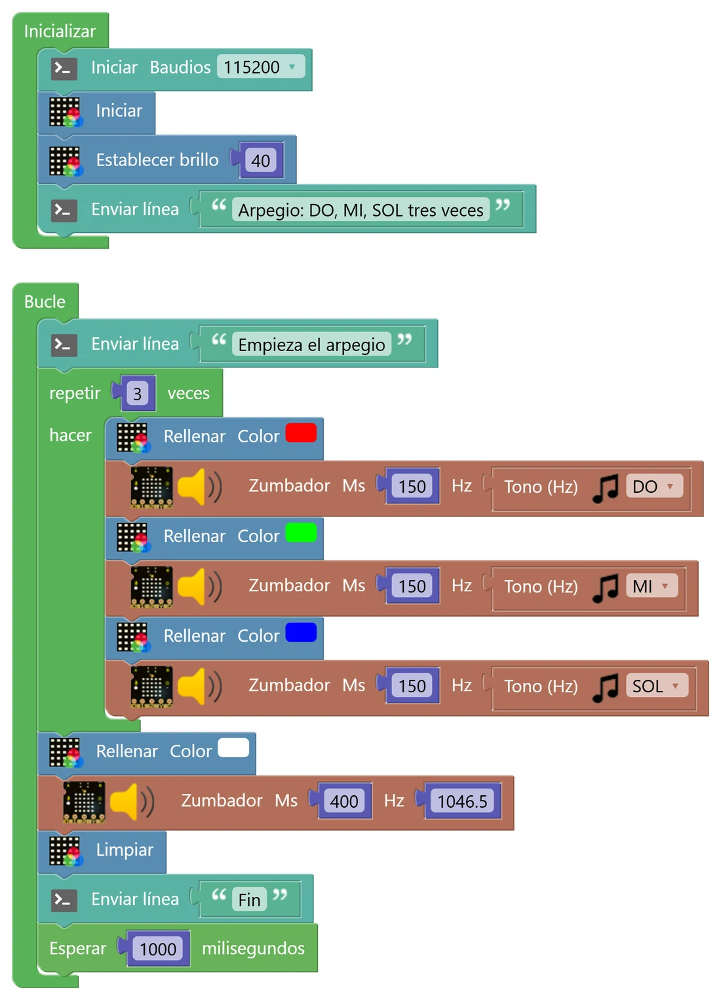
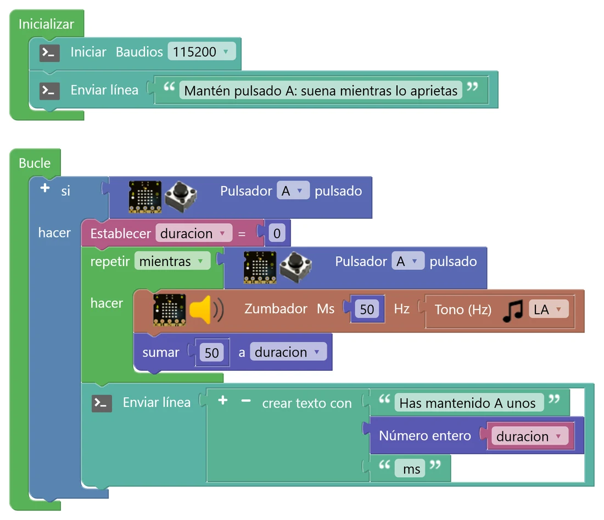
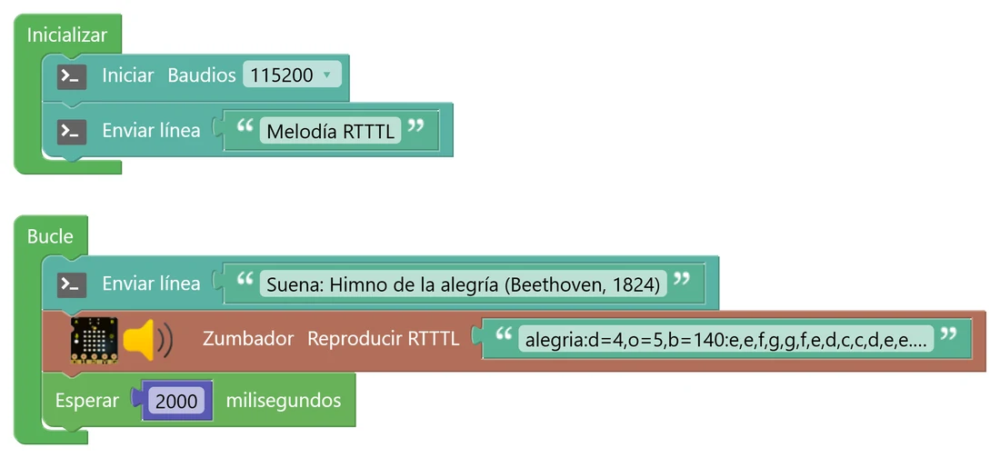

N5 Sonido y bucles
La placa ya sabe medir el sonido; ahora va a producirlo. Con el zumbador harás sirenas, notas y melodías, y por el camino aprenderás las tres formas de repetir algo: un número fijo de veces, contando, o mientras se cumpla una condición.
🔈 Los simuladores de este nivel suenan: sube el volumen del ordenador (o usa auriculares en clase).
🎯 Objetivo
- Hacer sonar el zumbador eligiendo la frecuencia (lo agudo) y la duración.
- Usar los tres bucles: repetir, contar con y mientras, y saber cuándo conviene cada uno.
- Tocar notas y melodías, y entender la relación entre notas y frecuencias.
- Descubrir qué significa que un bloque «bloquea» el programa mientras suena.
🧠 Antes de empezar
En el N4 viste que el sonido es una onda. El número de veces que vibra por segundo es su frecuencia, y se mide en hercios (Hz): cuanto más alta, más agudo. El oído humano oye, más o menos, entre 20 Hz y 20 000 Hz; una voz está entre 100 y 300 Hz y un silbato llega a 3000 Hz.
El zumbador de la placa (pin io33) es una pequeña membrana que la placa empuja y suelta muy deprisa con impulsos eléctricos. El bloque Zumbador (micro:STEAMakers › Actuadores) tiene dos huecos: Ms, cuánto dura el sonido, y Hz, la frecuencia.
| Bucle | Qué hace | En Python | Úsalo cuando… |
|---|---|---|---|
| repetir N veces Control | Repite lo de dentro un número fijo de veces | for _ in range(3): | Sabes cuántas veces: «tres pitidos» |
| contar con Control | Repite mientras una variable va de un valor a otro, de tanto en tanto | for f in range(500, 1501, 50): | Necesitas el número de cada vuelta: «de 500 a 1500 Hz» |
| mientras Control | Repite mientras una condición sea verdadera | while boton_pulsado(): | No sabes cuántas veces: «mientras mantengas el botón» |
💡 Para entenderlo: tres formas de dar vueltas a la pista
En educación física te pueden decir «da tres vueltas» (repetir), «da vueltas y ve contando de la 1 a la 10, y en cada una di el número» (contar con) o «corre mientras suene la música» (mientras). En los tres casos repites lo mismo; lo que cambia es cómo sabes cuándo parar.
Recuerda que todo esto ocurre dentro del Bucle principal, que ya se repite para siempre: es como dar tres vueltas a la pista… cada día del curso.
🧩 Programa 1 · La sirena
Una sirena es un sonido que sube y baja. Con contar con, la variable frecuencia va de 500 a 1500 Hz de 50 en 50; en cada vuelta suena 20 ms con esa frecuencia. Luego, otro «contar con» la hace bajar. De paso, la enviamos al plotter.

🛠️ Móntalo paso a paso
- En Inicializar: Iniciar Baudios 115200 y un mensaje (Comunicaciones › Puerto serie).
- En Bucle, un bloque contar con (Control). Pulsa el desplegable de la variable i y elige Cambiar nombre de variable…: llámala frecuencia. Pon desde 500 hasta 1500 de a 50.
- Dentro: un bloque Zumbador (micro:STEAMakers › Actuadores) con Ms 20 y, en Hz, la variable frecuencia (Variables). Debajo, un Plotter con el nombre «frecuencia» y la variable.
- Duplica el «contar con» (clic derecho → Duplicar) y ponlo debajo con desde 1500 hasta 500 de a 50. ¡Ojo! El paso sigue siendo 50, positivo: el bloque ya sabe que tiene que restar porque el principio es mayor que el final.
- ¿Cuántas vueltas da cada «contar con»? (Pista: de 500 a 1500 de 50 en 50, contando los dos extremos). ¿Cuánto dura entonces una subida?
- Cambia el paso a 10 y a 250. ¿Qué cambia en el sonido y en la forma de la gráfica? ¿Y en lo que tarda la sirena?
- ¿Qué forma tiene la gráfica del plotter? ¿Por qué?
🧩 Programa 2 · Un arpegio que se repite
Un arpegio son las notas de un acorde tocadas una detrás de otra. Aquí tocamos DO, MI y SOL tres veces con un repetir, cada nota con un color, y terminamos con un DO más agudo. El bloque Tono (Hz) te da la frecuencia de cada nota sin tener que sabértela.

🛠️ Móntalo paso a paso
- En Inicializar: consola, Iniciar la matriz y Establecer brillo 40 (micro:STEAMakers › NeoMatrix).
- En Bucle: un Enviar línea y un repetir 3 veces (Control).
- Dentro del repetir, tres parejas: Rellenar con un color y Zumbador de 150 ms. En el hueco Hz del zumbador encaja el bloque Tono (Hz) (micro:STEAMakers › Actuadores) y elige la nota en su desplegable: DO, MI y SOL.
- Fuera del repetir: Rellenar blanco, Zumbador de 400 ms con el número 1046.5 (un DO una octava más agudo: el doble de 523,26), Limpiar, un mensaje y Esperar 1000 ms.
- ¿Cuántas notas suenan en total en cada vuelta del Bucle? ¿Cuánto dura una vuelta completa? Haz la cuenta con las duraciones.
- La matriz cambia de color justo antes de cada nota y se queda así mientras suena. ¿Por qué no hace falta ningún «Esperar» entre una nota y la siguiente?
- ¿Cuántos bloques te ahorras gracias al «repetir»?
🧩 Programa 3 · Mientras pulsas
El zumbador suena mientras mantengas el botón A, y al soltarlo la consola te dice cuánto tiempo lo has mantenido. Como no sabemos de antemano cuántas vueltas va a dar, el bucle adecuado es mientras.

🛠️ Móntalo paso a paso
- Crea una variable de número, duracion (Variables › Crear variable… (Número)).
- En Bucle, un si (Lógica) con Pulsador A pulsado (micro:STEAMakers › Sensores). Aquí usamos «pulsado» y no «se ha pulsado», porque nos interesa el botón mientras está apretado.
- Dentro del si: Establecer duracion = 0 y un bloque repetir mientras (Control) con la misma condición, Pulsador A pulsado.
- Dentro del mientras: Zumbador 50 ms con Tono LA, y sumar 50 a duracion (Matemáticas): cada vuelta suma los milisegundos que ha durado.
- Fuera del mientras (pero dentro del si): un Enviar línea con «Has mantenido A unos » + Número entero(duracion) + « ms».
💡 Para entenderlo: un bloque que «se queda esperando»
Mientras el zumbador suena, la placa no hace nada más: se queda parada en ese bloque hasta que termina la nota, igual que con «Esperar». Y mientras está dentro del «mientras», tampoco sale de ahí: el resto del Bucle no se ejecuta hasta que sueltas el botón. Decimos que estos bloques bloquean el programa. No es un problema en una melodía, pero lo será cuando quieras que la placa haga varias cosas a la vez (lo verás en el reto pro y en el N8).
- Haz una pulsación muy corta. ¿Cuál es el valor más pequeño que puede salir? ¿Por qué nunca sale, por ejemplo, 20 ms?
- ¿Qué pasaría si quitaras el «si» y dejaras solo el «mientras» en el Bucle? Piensa en qué se escribiría en la consola cuando nadie pulsa.
- Mide con el móvil cuánto tiempo mantienes el botón y compáralo con lo que dice la consola. ¿Coinciden? ¿Qué podría hacer que no cuadrara del todo?
🧩 Programa 4 · Una melodía en una línea (RTTTL)
Escribir una melodía nota a nota con bloques es muy largo. Para eso existe el formato RTTTL, que inventó Nokia para los tonos de los móviles antiguos: una melodía entera cabe en una línea de texto. El bloque Reproducir RTTTL (micro:STEAMakers › Actuadores) la toca. Aquí suena el Himno de la alegría de Beethoven (1824), una música que ya es de dominio público.

El texto completo del bloque es:
alegria:d=4,o=5,b=140:e,e,f,g,g,f,e,d,c,c,d,e,e.,8d,2d,e,e,f,g,g,f,e,d,c,c,d,e,d.,8c,2c
| Parte | Significado |
|---|---|
alegria | El nombre de la melodía |
d=4,o=5,b=140 | Valores por defecto: cada nota dura una negra (4), en la octava 5, a 140 negras por minuto |
e, f, c… | Las notas con su nombre en inglés: c = DO, d = RE, e = MI, f = FA, g = SOL, a = LA, b = SI; p es un silencio |
8d, 2d | Un número delante cambia la duración: 8 = corchea (la mitad de una negra), 2 = blanca (el doble) |
e. | Un punto alarga la nota la mitad de su duración |
- Cambia
b=140porb=80y porb=220. ¿Qué cambia? ¿Cambia alguna nota? - Cambia
o=5poro=6. ¿Qué le pasa a la melodía? ¿Por qué crees que suena igual pero «más arriba»? - Escribe en RTTTL el principio de una melodía tradicional que conozcas (una canción popular, un villancico…) y pruébala aquí antes de pasarla a la placa.
🎹 Las notas son números
Cada nota es una frecuencia. Pulsa las teclas para oírlas y ver sus hercios: son las que da el bloque Tono (Hz).
Pulsa una tecla.
💡 Para entenderlo: subir una octava es multiplicar por 2
Fíjate en el primer DO (523,26 Hz) y en el último (1046,5 Hz): el agudo vibra exactamente el doble de rápido. Eso es una octava. Entre las dos hay 12 notas (contando las teclas negras), y cada una es la anterior multiplicada por un número fijo, más o menos 1,0595. Si multiplicas 12 veces por 1,0595 sale 2. Por eso el bloque dice que LA vale 880 Hz: es el doble del famoso LA de 440 Hz con el que se afinan las orquestas.
🚀 Retos
El timbre
Al pulsar A suena un «ding-dong» (dos notas, la primera más aguda y la segunda más larga) y la matriz se ilumina mientras suena. La consola avisa de cada llamada. ¿«Pulsado» o «se ha pulsado»?
Theremín de luz
Un theremín es un instrumento que se toca sin tocarlo. Haz que la frecuencia dependa de la luz: cuanta más luz, más agudo. Usa mapear y limitar del N4 para pasar del valor bruto de la luz a una frecuencia entre 200 y 2000 Hz, y que se calle si tapas del todo el sensor. Envía la luz y la frecuencia al plotter.
Metrónomo
Un tic con destello cada cierto tiempo, a un ritmo en bpm (pulsos por minuto) que empieza en 60. A sube 10 bpm y B baja 10, siempre entre 40 y 200. Calcula la espera entre tics (pista: en un minuto hay 60 000 ms) y escribe el bpm en la consola. Después, prueba a cambiar el ritmo rápidamente: ¿responde siempre a los botones? Explica por qué.
🔧 Bajo el capó: cómo suena un zumbador
Así traduce STEAMakersBlocks el bloque Zumbador y el «contar con» de la sirena:
#include <ABLocks_TimerFreeTone.h> ... for (frecuencia = 500; frecuencia <= 1500; frecuencia = frecuencia + 50) { TimerFreeTone(33, frecuencia, 20); // pin, Hz, ms } for (frecuencia = 1500; frecuencia >= 500; frecuencia = frecuencia - 50) { ... }
🔊 La onda cuadrada
TimerFreeTone pone el pin 33 a 3,3 V y a 0 V alternativamente, tantas veces por segundo como la frecuencia. Para 500 Hz, cada ciclo dura 1/500 s = 2 ms: 1 ms encendido y 1 ms apagado. Esa forma de onda, que salta de golpe entre dos valores, se llama onda cuadrada, y por eso el zumbador suena «electrónico» y no como una flauta. La librería se queda esperando hasta que pasa la duración: es lo que hace que el bloque sea bloqueante.
Fíjate también en que la frecuencia se pasa como número entero: el DO de 523,26 Hz suena en realidad a 523 Hz. Nadie nota la diferencia.
🔁 «Contar con» por dentro
El bloque genera un for distinto según el principio sea menor o mayor que el final: suma el paso o lo resta, y compara con <= o >=. Por eso el paso se escribe siempre positivo. Si pones −50, el código que se genera es frecuencia--50, que no compila.
El RTTTL se traduce en TimerFreeToneRtttl(33, "alegria:d=4,..."): la librería lee el texto letra a letra, calcula la frecuencia y la duración de cada nota y llama a TimerFreeTone con cada una.
🔎 ¿Lo has entendido?
Cuando termines, haz una captura con tu puntuación para el porfolio.
📁 Al porfolio
- Capturas de tus programas, y del plotter de la sirena.
- Tus respuestas a «Interpreta lo que ves», con las cuentas (vueltas, duraciones).
- Un vídeo corto del arpegio o de tu reto sonando.
- Tu propia melodía en RTTTL (una canción tradicional o inventada por ti) y lo que significa cada parte.
- El reto que hayas hecho, con su captura y, si es el pro, la explicación de por qué a veces no responde a los botones.
- Captura de tu resultado en «¿Lo has entendido?».